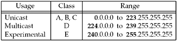
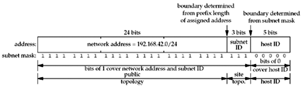
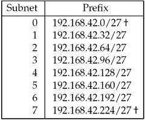
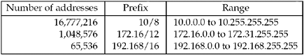

| [ Team LiB ] |
|
A.4 IPv4 AddressesIPv4 addresses are 32 bits long and are usually written as 4 decimal numbers, separated by dots ("."). This is called dotted-decimal notation, and each decimal number represents one of the 4 bytes of the 32-bit address. The first of the 4 decimal numbers identifies the address type, as shown in Figure A.3. Although historically IPv4 addresses were divided into five classes, as shown in Figure A.3, the three classes used for unicast addresses are functionally equivalent, so we show them as one range. Figure A.3. Ranges for the five different classes of IPv4 addresses. Whenever we talk about an IPv4 network or subnet address, we talk about a 32-bit network address and a corresponding 32-bit mask. Bits of 1 in the mask cover the network address and bits of 0 in the mask cover the host. Since the bits of 1 in the mask are usually contiguous from the leftmost bit, and the bits of 0 in the mask are always contiguous from the rightmost bit, this address mask can also be specified as a prefix length that denotes the number of contiguous bits of 1 starting from the left. For example, a mask of 255.255.255.0 corresponds with a prefix length of 24. These are known as classless addresses, so called because the mask is explicitly specified instead of being implied by the address class. IPv4 network addresses are normally written as a dotted-decimal number, followed by a slash, followed by the prefix length. Figure 1.16 showed examples of this.
Using classless addresses requires classless routing, and this is normally called classless interdomain routing (CIDR) (RFC 1519 [Fuller et al. 1993]). CIDR usage decreases the size of the Internet backbone routing tables and reduces the rate of IPv4 address depletion. All routes in CIDR must be accompanied by a mask or a prefix length. The class of the address no longer implies the mask. Section 10.8 of TCPv1 talks more about CIDR. Subnet AddressesIPv4 addresses are often subnetted (RFC 950 [Mogul and Postel 1985]). This adds another level to the address hierarchy:
The boundary between the network ID and the subnet ID is fixed by the prefix length of the assigned network address. This prefix length is normally assigned by the organization's Internet service provider (ISP). But, the boundary between the subnet ID and the host ID is chosen by the site. All the hosts on a given subnet share a common subnet mask, and this mask specifies the boundary between the subnet ID and the host ID. Bits of 1 in the subnet mask cover the network ID and subnet ID, and bits of 0 cover the host ID. As an example, consider a site that is assigned the prefix 192.168.42.0/24 by its ISP. If it chooses to use a 3-bit subnet ID, 5 bits are left for the host ID, as shown in Figure A.4. Figure A.4. 24-bit network address with 3-bit subnet ID and 5-bit host ID. This division results in the subnets shown in Figure A.5. Figure A.5. Subnet list for 3-bit subnet ID and 5-bit host ID. This gives us 6 to 8 subnets (subnet IDs 1–6 or 0–7), each supporting 30 systems (host IDs 1–30). RFC 950 recommends not using the two subnets with a subnet ID of all zero bits or all one bits (the ones marked with a dagger in Figure A.5. Most systems today support these two forms of subnet IDs. The highest host ID (31, in this case) is reserved for the broadcast address. The host ID 0 is reserved for identifying the network and to avoid problems with old systems that used host ID 0 as the broadcast address. However, on controlled networks with no such systems, it may be possible to use host ID 0. In general, network programs need not care about specific subnet or host IDs and should treat IP addresses as opaque values. Loopback AddressesBy convention, the address 127.0.0.1 is assigned to the loopback interface. Anything sent to this IP address loops around and becomes IP input without ever leaving the machine. We often use this address when testing a client and server on the same host. This address is normally known by the name INADDR_LOOPBACK.
Unspecified AddressThe address consisting of 32 zero bits is the IPv4 unspecified address. In an IPv4 packet, it is only permitted to appear as the source address in packets sent by a node that is bootstrapping before the node learns its IP address. In the sockets API, this address is called the wildcard address and is normally known by the name INADDR_ANY. Also, specifying it in the sockets API, for example, to bind for a listening TCP socket, indicates that the socket will accept client connections destined to any of the node's IPv4 addresses. Private AddressesRFC 1918 [Rekhter et al. 1996] sets aside three address ranges for "private Internets," that is, networks that do not connect to the public Internet without a NAT or proxies in between. These address ranges are shown in Figure A.6: Figure A.6. Ranges for private IPv4 addresses. These addresses must never appear on the Internet; they are reserved for use in private networks. Many small sites use these private addresses and NAT to a single public IP address visible to the Internet. Multihoming and Address AliasesTraditionally, the definition of a multihomed host has been a host with multiple interfaces: two Ethernets, for example, or an Ethernet and a point-to-point link. Each interface must generally have a unique IPv4 address. When counting interfaces to determine if a host is multihomed, the loopback interface does not count. A router, by definition, is multihomed since it forwards packets that arrive on one interface out another interface. But, a multihomed host is not a router unless it forwards packets. Indeed, a multihomed host must not assume it is a router just because the host has multiple interfaces; it must not act as a router unless it has been configured to do so (typically by the administrator enabling a configuration option). The term "multihoming," however, is more general and covers two different scenarios (Section 3.3.4 of RFC 1122 [Braden 1989]):
Hence, the definition of a multihomed host is one with multiple interfaces visible to the IP layer, regardless of whether those interfaces are physical or logical.
|
| [ Team LiB ] |
|